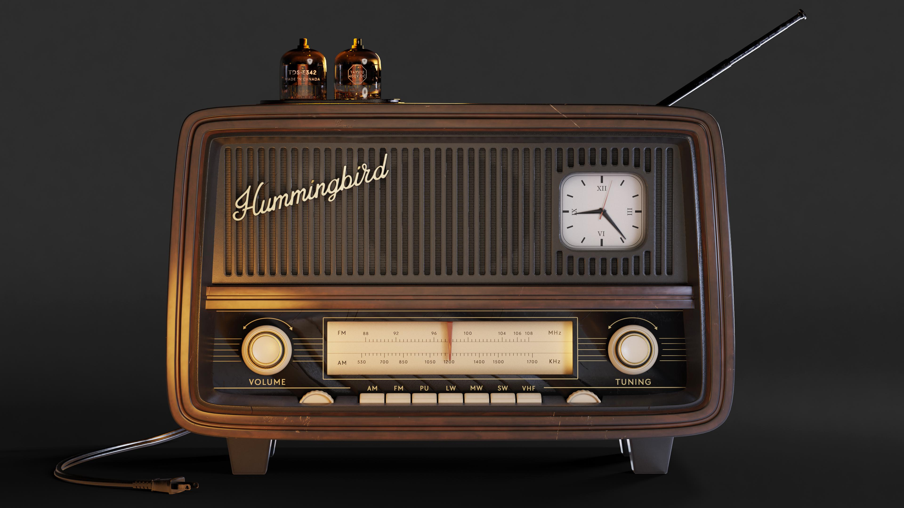

LABORATORIOS Y ESTUDIOS EXPERIMENTALES
Contexto histórico, avances tecnológicos
y rol de las mujeres
Entre 1950 y 1970 se consolida un período fundamental para la historia de la música electrónica: el de los laboratorios y estudios experimentales. A diferencia de las primeras décadas del siglo XX, donde los instrumentos electrónicos eran prototipos aislados, en estos años la música electrónica se desarrolla dentro de instituciones, radios estatales, universidades y centros de investigación. Es en este contexto donde la electrónica deja de ser una curiosidad técnica para convertirse en un lenguaje musical autónomo, con técnicas, estéticas y métodos de composición propios.
Este período está profundamente marcado por la posguerra y la reorganización tecnológica y científica del mundo:
- Los avances desarrollados durante la Segunda Guerra Mundial pasan al ámbito civil.
- Las radios estatales europeas financian estudios experimentales.
- Se fortalecen las instituciones culturales y científicas.
- Surgen nuevas corrientes artísticas que buscan romper con la tradición.
Avances tecnológicos clave (1950–1970)
1. La cinta magnética como herramienta compositiva
- Grabar sonidos.
- Cortarlos y pegarlos.
- Invertirlos.
- Cambiar su velocidad.
- Superponer capas.
2. Osciladores y generadores de tono
- Osciladores (generadores de ondas puras).
- Filtros.
- Generadores de ruido.
- Moduladores.
3. Consolas y sistemas de mezcla
- Mesas de mezcla analógicas.
- Sistemas de reverberación.
- Espacialización sonora.
4. Primeros sintetizadores y sistemas de control
- Los primeros sintetizadores modulares (Moog, Buchla).
- Sistemas de control por voltaje.
Mujeres clave de la época:

Radio de 1950